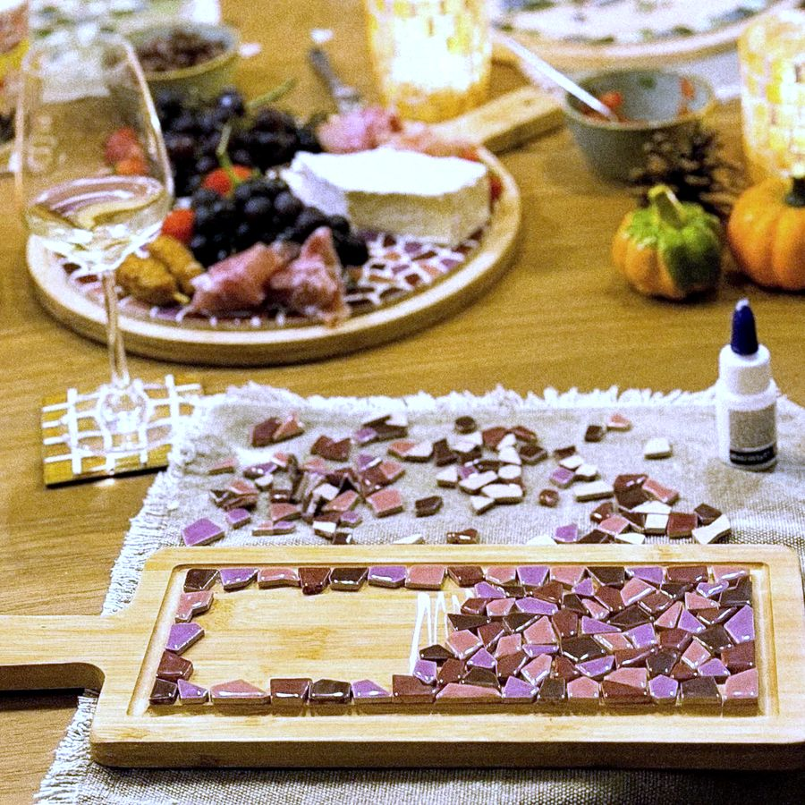
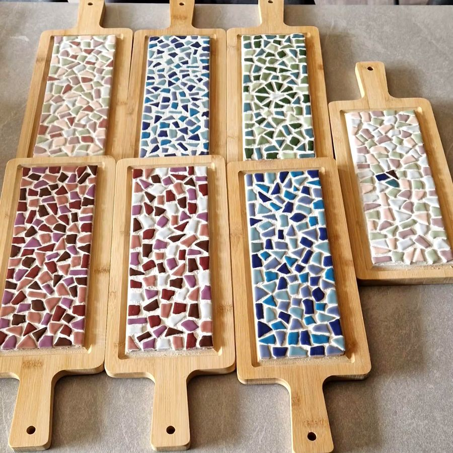
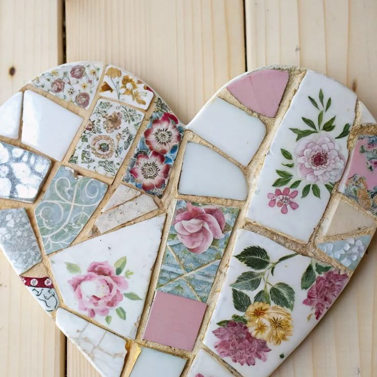
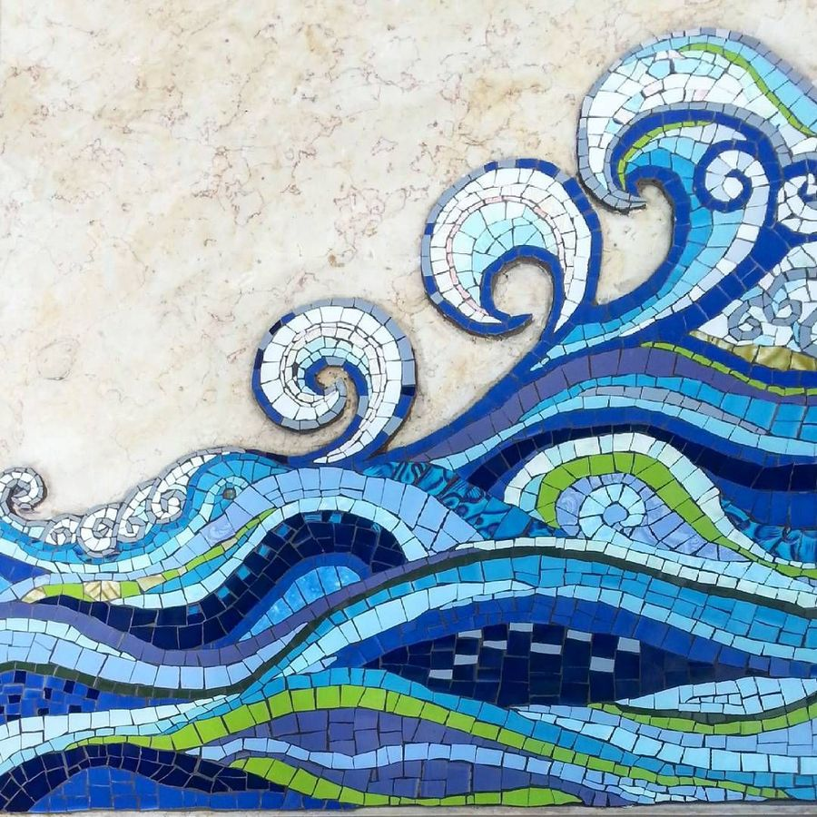

Over deze Workshop
Wat is mozaïeken?
Bij mozaïeken maakt u een afbeelding of patroon van kleine stukjes glas, keramiek of tegel. Elk steentje heeft zijn eigen kleur en vorm, en samen vormen ze één geheel. Het mooie is dat u geen tekentalent nodig heeft: met een paar kleuren en een eenvoudig patroon maakt u al iets prachtigs.
Onze ervaren makers laten u stap voor stap zien hoe het werkt: hoe u een ontwerp kiest, hoe u de steentjes legt en vastzet, en hoe u alles afwerkt tot een strak en glanzend resultaat. Zo ontdekt u alle kneepjes van het vak, terwijl u in een gezellige sfeer aan uw eigen ontwerp werkt.
De workshop geven wij zowel bij u op locatie als in ons eigen atelier in de Betuwe. Komt u liever naar ons toe, dan ontvangen wij u graag in onze volledig ingerichte werkruimte. Wilt u dat wij langskomen, bijvoorbeeld voor een teamuitje op kantoor of een feestje bij u thuis? Dan brengen wij alle materialen gewoon mee.
Populair: een borrelplank met mozaïek
Onze populairste workshop is het mozaïeken van een borrelplank. U versiert uw eigen houten plank met een mozaïek in de kleuren en het patroon dat u zelf kiest. Zo maakt u een unieke plank waar u bij elke borrel met trots uw hapjes op serveert, of een origineel handgemaakt cadeau.


 Creatieve Vrijheid
Creatieve Vrijheid
Geen ervaring nodig. Onze workshops zijn ontworpen voor deelnemers van alle niveaus.
 Kies Uw Kleuren
Kies Uw Kleuren
Van rustige aardetinten tot een vrolijke regenboog: u bepaalt zelf de kleuren en het patroon.
Mee Naar Huis
U gaat naar huis met uw eigen handgemaakte mozaïek, een uniek cadeau of pronkstuk.
 Hapje & Drankje
Hapje & Drankje
Creëer in een ontspannen, gezellige sfeer, ideaal voor groepen en feestjes.
Iets Anders Mozaïeken? Op Aanvraag!
Heeft u een ander idee? Naast de borrelplank mozaïeken wij op aanvraag ook andere stukken. Denk bijvoorbeeld aan:
 Onderzetters
Onderzetters- Bloempotten
- Spiegellijsten
 Uw eigen idee
Uw eigen idee
Vermeld uw wens in uw aanvraag, dan denken wij graag met u mee over wat er mogelijk is.


Wat Maakt Deze Workshop Bijzonder?
Mozaïeken is heerlijk rustgevend: steentje voor steentje ziet u uw ontwerp groeien. Terwijl u bezig bent, ontstaan er vanzelf leuke gesprekken aan tafel. Geen twee mozaïeken worden hetzelfde, en u maakt iets wat u echt gebruikt. Of u nu op zoek bent naar een origineel teamuitje, een creatieve verjaardag of gewoon een ontspannen middag: deze workshop biedt alles.
 Praktische Informatie
Praktische Informatie
De workshop Mozaïeken in het kort:
- Duur: 2 uur
- Professionele begeleiding
- Inclusief materialen (voor ieder wat wils)
- Voor beginners en gevorderden
- De kunstenaar maakt sfeerfoto's en een groepsfoto na afloop
U hoeft alleen uw creativiteit mee te brengen! De workshop kan voor groepen worden georganiseerd en wij geven hem zowel op locatie als in ons eigen atelier in de Betuwe. Voor meer informatie over data, prijzen, stukken op aanvraag en het reserveren van uw plaats, neem contact met ons op. Wij beantwoorden graag al uw vragen!
Klaar om te mozaïeken?
Reserveer nu uw plek en kom uw eigen borrelplank of ander mozaïek maken. Wij helpen u graag met alle informatie over beschikbare data en prijzen.